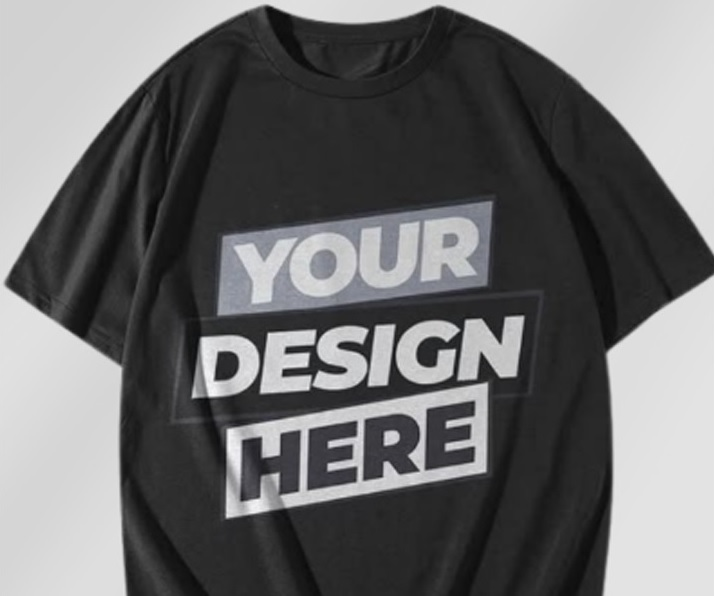

Vintage


Throwback styling for people who remember the old way.
A replica jersey lists a roster. This t-shirt carries a feeling instead: CLEVELAND 1946. Brown and orange is not a polite colourway, which is rather the point of wearing it. This design sits on that side of the fence. Fan-drawn rather than licensed: Cleveland 1946 is ours, and it stays that way.
Checkout happens on Mayzing - confirm your size there before completing your purchase.
Jump to: colourways · apparel · story · sizing · FAQ
This product is sold in one colourway: White. The mockup above shows it exactly as Mayzing prints it, and the Mayzing product page is where you confirm your size before checkout.
This campaign prints the design on one garment: Men's T-Shirt. You confirm your size on the Mayzing product page.
Confirm your size on Mayzing before completing your purchase.
CLEVELAND 1946 is the entire origin story of Cleveland 1946 White Shirt. Nobody asked for a second idea. The t-shirt is the first idea, held still long enough to print.
A mark like Cleveland 1946 has to work at arm's length and across a room, which rules out fine line work and busy backgrounds. The composition stays blunt on purpose: CLEVELAND 1946, strong contrast, and enough space around it that the fabric colour does the rest.
Sundays are the fixed point; everything else moves around them. A piece carrying CLEVELAND 1946 is meant to sit in that weekly habit, not in a one-weekend costume. And there is a chant for it: "Here We Go Brownies", the nearest thing this fanbase has to a house style, which Cleveland 1946 sits inside comfortably.
Because it is fan-made rather than licensed, Cleveland 1946 White Shirt can carry CLEVELAND 1946 without borrowing a mark it has no right to. So the thing you take home is CLEVELAND 1946, not a licence number.
Cleveland 1946 White Shirt belongs to Cleveland without needing a licence to prove it. Wear it, or give it, or leave it on a shelf until Sunday - the graphic will still be CLEVELAND 1946.
Cleveland 1946 White Shirt stands out as vintage Cleveland football styling: worn-in athletics lettering and Cleveland 1946, printed with a modern process so the throwback look does not arrive already cracked.
The search is for a Browns fan t-shirt; the reason to pick this one is CLEVELAND 1946.
Think thrift-style dressers, throwback fans, and Cleveland supporters who moved away and still set an alarm for kickoff. The artwork, Cleveland 1946, travels because the idea is the city and the club, not a seating chart.
Buying Cleveland 1946 White Shirt for someone else is low risk - this campaign lists a men's cut. Cleveland 1946 White Shirt is not tied to a single week of the season, and pricing starts at $20.00.
Where this t-shirt actually gets worn: the walk from the parking lot to the gate in November, a tailgate where you are standing outside for three hours before anyone throws a ball, and a sports bar two time zones from the stadium. Short sleeves early in the year, a layer over it later, which is why it outlasts the novelty pieces in a fan's wardrobe. The graphic stays Cleveland 1946 in all of those rooms.
It also survives the rest of the week, because a fan-made graphic like Cleveland 1946 reads as a graphic first - it works on a commute or a Saturday errand in a way a replica jersey does not.
Gridiron Locker is an independent fan-made store. These designs are not officially licensed by any team, league, university or player.
This campaign is offered in 8 sizes: S to 5XL (S, M, L, XL, 2XL, 3XL, 4XL, 5XL). This campaign lists a men's cut. The measurement chart below is a guide - the size you select is confirmed on the Mayzing product page.
| Size | Chest width (in) | Body length (in) |
|---|---|---|
| S | 18 | 28 |
| M | 20 | 29 |
| L | 22 | 30 |
| XL | 24 | 31 |
| 2XL | 26 | 32 |
| 3XL | 28 | 33 |
| 4XL | 30 | 34 |
| 5XL | 32 | 35 |
Lay a shirt you already own flat and compare - it beats guessing. Full guide: size guide.
Every item is printed after the order is placed - there is no warehouse stock to ship from, which is why the catalogue can stay this wide without anything selling out. Production takes a few business days, then the parcel moves.
Shipping: this design is printed and shipped by Mayzing, which calculates the live rate for your address in its cart. Production and delivery times vary by product and destination, so the current figures are shown at checkout rather than quoted here.
If an item arrives misprinted, damaged or defective, contact support with a photo and your order number and it is handled under Mayzing's return policy, shown at checkout. Allow extra time if you need a piece for a specific game - order early in the week rather than the night before.
The artwork is CLEVELAND 1946. It is an independent, fan-made graphic for Browns supporters, not official team merchandise.
This product is sold in one colourway: White. Colour availability is set by the campaign; if more are ever published they appear on the Mayzing product page first.
Sizes S to 5XL (S, M, L, XL, 2XL, 3XL, 4XL, 5XL) for this campaign. This campaign lists a men's cut. The measurement chart on this page shows chest width and body length in inches. You pick your size on the Mayzing product page.
On Mayzing. Gridiron Locker is where you see the design and the details; garment style, colour and size are selected on the Mayzing product page for this campaign, immediately before checkout.
Orders are placed and paid for on Mayzing, the print-on-demand partner that runs this campaign. Gridiron Locker never takes payment or handles your card details - the SHOP NOW button hands you over to the campaign page.
No. This is an independent, fan-made design. It is not affiliated with, endorsed by, sponsored by or licensed by any professional or collegiate team, league or player. Team and city names are used only to describe who the artwork is for.
It is printed on demand. Once your order is placed on Mayzing the t-shirt is printed and finished, then shipped with tracking. Nothing is pre-printed, so there is no dead stock and no 'sold out' on a design that is still live.
This design is $20.00 on Mayzing: one garment style at one flat price. The final total - including any size surcharge for extended sizes - is the one shown on Mayzing before you pay.
Brown and orange is the whole point of this collection, and it is why it moved to a print partner that actually carries brown. Each product page previews the colourways published for that design; the authoritative, current list is on the Mayzing product page, where you pick the one you want.
Price $20.00, one garment style and one colourway, sizes S-5XL. Confirm your size on Mayzing before completing the order.
We also turn fan ideas into original one-off graphics - your team, your colors, your phrase. You dream it. We design it.
Same collection, same print partner, same hand-off to Mayzing.

Your nickname, catchphrase or team slogan - printed on tees, hoodies, mugs & more. No minimum order.